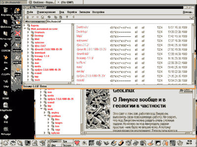
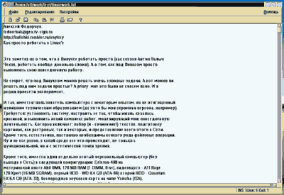
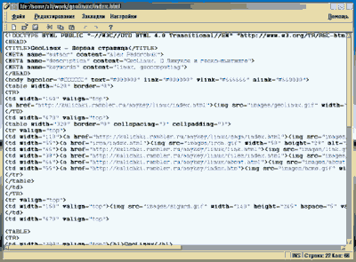
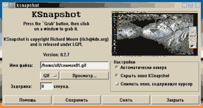
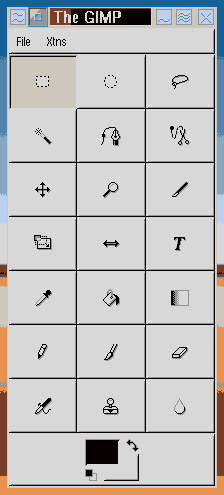
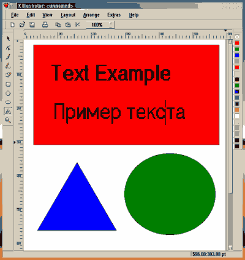
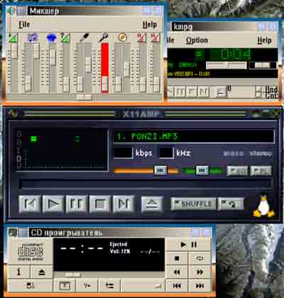

|
Как просто работать в Linux'е
Алексей Федорчук
Это заметка о том, как просто работать в Linux. Не в том
смысле, что работать в Linux'е - просто (работать вообще очень сложно, как
говаривал Антон Павлович Чехов). А о том, как, работая под Linux'ом,
выполнять свою повседневную работу. Каковая (по крайней мере для меня)
включает набор текстов для последующей печати или помещения в Сеть,
подготовка и вставка иллюстраций, как растровых, так и векторных, просмотр
Сети.
Кроме того, естественно, постоянно необходимы всякого
рода файловые операции. А также какое-никакое музыкальное сопровождение
(что поделать, привык). Ну и не все равно, в какой среде все это
происходит, не только с функциональной, но и с эстетической точки зрения.
Поскольку именно среда во многом и определяет впечатление
от системы, с нее то мы и начнем. Все ниже сказанное относится к Linux
Mandrake 6.0 Russian Edition. В которой оконной средой по умолчанию
является KDE, содержащая встроенные средства, позволяющие (по крайней мере
теоретически) как-то решать почти все перечисленные проблемы. И так,
Оконная среда KDE
В отличие от большинства прочих оконных менеджеров, KDE
представляет собой действиетльно интегрированную среду, содержащую базовые
средства для решения ряда повседневных задач. Писалось о ней не мало,
поэтому я остановлюсь только на моментах, важных для меня лично, или
почему-либо привлекших мое внимание.
Внешне (рис. 1) KDE имеет нечто общее с Windows 9x или
оболочкой OS/2. Хотя спутать ее с обеими - невозможно. Это, с одной
стороны, обеспечивает чувство смутного знакомства (и не обескураживает,
как экзотика, скажем, Enligtenment'а), с другой - будит здоровое
любопытсво, не вызывая скуки, появляющейся при взгляде на, к примеру,
fvwm2 (не для того же, в самом деле, мы ставили X-Window, чтобы лицезреть
великую кнопку Start).

Рис. 1. Оконная среда KDE, файловый менеджер kfm (на
заднем плане) и встроенный в него браузер (на переднем плане)
Правда, и в KDE нечто вроде такой кнопки (называемой K)
имеется. Она расположена в начале панели программ (по умолчанию - внизу
экрана, но может помещаться с любой стороны). Программная панель отделена
от панели задач (которая по умолчанию - вверху). Так что места достаточно
для любого разумного количества кнопок и запущенных приложений (а если
учесть еще минимум три рабочих стола - то более чем достаточно).
Кроме положения панелей, настраивается и почти все
остальное: цвет и узор фона, цветовые схемы в целом, экранные шрифты.
Правда, выбор последних, особенно русских, удручающе узок, а имеющиеся с
точки зрения эстетики и читабельности далеки от совершенства.
Кроме того, в комплекте имеется набор тем рабочего стола;
некоторые - весьма симатичны. Разумеется, в качестве обоев можно
использовать и свои картинки (в любом из обычных растровых форматов).
Однако хватит об эстетике, поговорим о функциональности. В этом плане
один из важнейших аспктов для пользователя -
Средства управления файлами
Здесь таковое именуется kfm (K Files Manager).
Организована она в стиле Windows'кого Explorer'а. Мне то больше нравятся
системы типа Nortona, FAR'а при прочих Windows Commander'ов. Но эта -
довольно удобна.
Kfm функционирует в двух режимах - обычном
пользовательском и суперюзерском (в последнем случае при запуске в
терминале запрашивается пароль root'а). Функционально они аналогичны,
различаясь только правами доступа.
Управление kfm - браузероподобное (см. рис. 1, задний
план). Имеются кнопки - Вверх, Вперед, Назад, Домой. Щелчок (одинарный) на
текстовом файле автоматически вызывает редактор kedit (о котором -
дальше), на графическом - вьювер kview.
Операции над файлами (копирование, удаление, открытие и
прочее) осуществляются до безобразия просто - щелчком правой клавиши
вызывается всплывающее меню, из которого выбирается соответствующий пункт.
Можно работать как с одинокими файлами, так и с целыми каталогами и
подкаталогами любой степени вложенности.
Так, чтобы скопировать некий каталог (хоть диск целиком,
ведь разница между каталогом и устройством - нет), выбираем пункт
"Скопировать" в исходной точке, переходим в целевую и выбираем -
"Вставить". Правда, команды "Переместить" нет, для этого надо вернуться
обратно и удалить исходный каталог. Для удаления есть два режима -
безвозвратное (как известно, в UNIX'е нет аналогов unerase, undelite etc.)
или путем помещения в корзину (аналогичную таковой Windows; правда, как
настроить или хотя бы определить ее размер - так и осталось для меня
загадкой).
Кстати, что раздражает человека, непривычного к UNUX'у -
это всякого рода права доступа. Часто хоть тресни, а скопировать или
перезаписать файл не удается. Пока не вспомнишь, что создал его (а то и
целый каталог) в роли root'а. Конечно, kfm в режиме суперпользователя
позволяет изменить принадлежность файла пользователю и группе, а также
изменить для них права доступа. Однако, в отличие от копирования, это
приходится делать по одному, что - скучно. Проще сделать это в командной
строке посредством команд chgrp, chown, chmode с параметром -R
(рекурсивно, то есть включая все вложенные подкаталоги и их файлы).
Сетевая ориентированность kfm (в нем, как и в последних
Explorer'ах, нет разницы - работаете Вы с файлами на локальном диске или
на сколь угодно удаленной машине; но реализовано это не столь навязчиво,
как в Windows) подчеркивается тем, что в него встроен собственный браузер.
Это - не бог весть что по сравнению с современными
Explorer'ами и Communicator'ами, но все минимально необходимые функции в
нем есть (см. рис. 1, передний план). Правда, не поддерживается JavaScript
и Java, а также фреймы. Зато работает чрезвычайно быстро. Кроме
навигационных целей, его удобно использовать для просмотра простых
страничек, создаваемых в kedit'е или kwrite, но об этом позднее
Раз уж здесь зашла речь о браузерах (ведь это тоже в
какой-то мере средство работы с файлами) - скажу еще пару слов , что бы
потом не возвращаться к этой теме. Вместе с KDE (и встраиваясь в него) в
комплекте идет Netscape Communicator версии 4.6. Что про него скажешь -
Netscape как Netscape, полный аналог соответствующей по номеру версии для
Windows, с Composer'ом и Messager'ом (но, хвала аллаху, без AOL'а,
избавиться от которого в Windows - задача не из самых простых).
Автоматически устанавливается plug'in для просмотра Shockwave, хотя,
скажем, проигрывателя Real'овских файлов или VRML-вьювера - нет. Хотя,
возможно, их можно каким-то образом доустановить: попытка запустить
RealVideo вызвала предложение это сделать. За отсутствием Сети - проверить
не смог.
По той же причине не проверял, как функционирует почтовый
клиент. А к Composer'у у меня отношение отрицательное в любом исполнении
(из-за его постоянных неразрывных пробелов, навязчивого метаполя generated
и вообще стремления переиначить введенные руками тэги).
Ну вот, с файлами в первом приближении разобрались. Теперь посмотрим,
чем же они (файлы) делаются. Здесь важнейшими для меня являются
Средства работы с текстами
Для этого традиционно служат текстовые редакторы и текстовые
процессоры. О чем и хочу сделать несколько предварительных замечаний.
Одна из причин моего приобщения к Linux'у -
неудовлетворенность современными текстовыми процессорами. Со временем они
не становятся лучше, а становятся только больше. А вопрос этот меня весьма
трогает - я использую процессоры не по прямому, якобы, назначению - для
набора текстов. Для этого лучше подходят максимально простые редакторы -
меньше отвлекающих факторов, ведь я не столько набираю, сколько -
придумываю. А в современном процессоре трудно не поддаться порочному
занятию параллельного форматирования, что мешает потоку творческого
сознания.
Для меня процессоры - в первую очередь инструмент
верстки. Так уж сложилось исторически. То, с чем я имею дело -
многостраничные, довольно сложно структурированные документы (научного,
так сказать, содержания). Ни PageMaker, ни QuarkPress для этих целей
категорически не подходят, что бы не говорили их адепты. А в специально
предназначенный для такого FrameMaker поддержку русского языка так никто и
не удосужился вставить (баловство это - наука по русски). Не верстать же,
право, в старой DOS'овской Ventura с ее GEM'ом...
Вот и приходится пользоваться текстовыми процессорами. А с точки зрения
верстки они просто деградируют (за исключением WordPerfect'а, но уж шибко
экзотичен он у нас).
Достаточно посмотреть, во что превратился AmiPro (уже в
версии 3.0 он содержал практически все, что нужно), сменив свое милое
сердцу имя друга профессионала на безликий - WordPro. А уж чего стоит
такое достижение микрософтовской творческой мысли, как невозможность (в
97-м Word'е) создать пустой фрейм? Все никак не удосужусь проверить,
исправлено это в двухтысячном Word'е, или возведено в ранг пренепременной
фичи.
Но ведь есть же TEX, специально предназначенный именно
для научных текстов, скажете Вы мне. Верно. Но исторически, не будучи
математиком, дел с ним не имел и не знал. Учить что-то просто так, впрок,
без сиюминутной потребности, я не умею. А поскольку верстальные задачи
имеют свойство появляться неожиданно и требоваться - вчера, времени на
освоение TEX'а в процессе работы не оставалось. Приходилось пользоваться
тем, что уже и так знаешь.
Вот я и решил совместить освоение TEX'а с приобщением к
Linux'у. Поскольку он в последнем реализован многобразно и хорошо. В том
числе - и для русскоязычных текстов. Здесь я, однако, об этом писать не
буду, поскольку верстку текстов к простым задачам отнести сложно.
Порастекавшись мыслию по древу текстовых процессоров, вернусь. однако,
к нашим баранам, то есть к редакторам. Тем, которые идут в комплекте с
KDE.
Их - два, kedit и kwrite. Они ориентированы на разные задачи и,
соответственно, отличаются функционально.
Kedit (рис. 2) - простенький редактор вроде Notepad'а.
Имеет все необходимое для набора текстов - выделение, копирование,
вставка, поиск и замена, и так далее. И - ничего лишнего для их
форматирования. Нужные настройки также присутствуют: можно изменить цвет
фона и текста, шрифт и (для русского языка) кодировку. В общем,
спартанский набор наборщика (простите за тавтологию).

Рис. 2. Kedit - простой текстовый редактор
Kwrite функционально ближе к редакторам типа Aditor'а или
TextViewer'а (рис. 3). Он предназначен скорее для писания исходных текстов
программ. Помимо обычных настроек, позволяет цветом выделять языковые
конструкции (тэги html, синтексис C, Java и прочих). В общем, типичный
редактор для программиста.

Рис. 3. Kwrite - развитый текстовый редактор для
программистов.
Как видите, для человека, ориентирующегося на Сетевое,
если так можно выразиться, писание, средства более-менее достаточные: в
kedit'е удобно набирать тексты любой длины (не отвлекаясь на
форматирование), в kwrite - проставить тэги (хотя средства автоматизации
этого процесса, естественно, отсутствуют). А для просмотра результатов
можно использовать браузер из kfm.
Разумеется, мало-мальски сложный сайт в kwrite не
сделать, так как остутствуют средства проверки ссылок, целостности проекта
и тому подобные атрибуты развитых html-редакторов. Однако - уж получше
Notepad'а, который многие профессиональные web-мастера считают лучшим
web-редактором всех времен и народов. Правда, думаю, все же лукавят.
Если же нужно самовыразиться на бумаге (хотя бы в виде
милой сердцу постсоветского бюрократа и головотяпа служебной записки) -
штатного инвентаря KDE, конечно, мало. Ведь даже выровнять по правому краю
ключевые слова - Тому-то от такого-то - и то нельзя. Требуется
какой-никакой текстовый процессор. Однако об этом - как-нибудь в другой
раз. А пока - о следующем необходимом моменте повседневной деятельности, а
именно - о
Работе с графикой
Первое, о чем тут хочется сказать - это о программке
ksnapshot (рис. 4), предназначенной для снятия экранных копий (так
называемых скриншотов). Она несколько напоминает Capture из Corel'овского
комплекта, хотя и попроще. Позволяет снять весь экран или только активное
окно, скрыв или, напротив, выведя на первый план окно самого ksnapshot'а;
в отличие от Capture, нельзя скопировать объект произвольной формы.
Результаты можно сохранить в виде gif, jpeg, bmp и пара мне неизвестных
типов. Как ни странно, среди выходных форматов отсутствует tiff.

Рис. 4. Knapshot - программа для снятия экранных копий.
Следующий графический инструмент - GIMP (рис. 5). Это
развитый растровый редактор, может быть, и не дотягивающий до PhotoShop'а.
Но функционально не уступает по крайней мере Picture Publisher или Corel
PhotoPaint. Весьма удобен в обращении, все манипуляции можно выполнить
щелчком правой клавиши мыши. Понимает все основные растровые форматы, в
том числе и PhotoShop. Впрочем, GIMP заслуживает отдельного (и подробного)
разговора. Пока же отметим, что инструмент для элементарной (и не только)
обработки растровой картинки в штатном наборе - имеется.

Рис. 5. Растровый редактор GIMP
Наконец, последний из предметов первой необходимости -
редактор векторный. В этом качестве выступает Killustrator (рис. 6). С ним
дело обстоит похуже. Если относительно GIMP'а можно спорить, лучше он
PhotoShop'а или хуже, то здесь никакие споры неуместны: Killustrator не
дотягивает до уровня даже рисовальных модулей из ранних версий
презентационных пакетов, вроде Freelance.

Рис. 6. Векторный редактор Killustrator
Имеется базовый набор рисовальных средств - линий, кривых
Безье, овалов и многоугольников. И средства изменения их атрибутов. И все.
Ни спецэффектов, ни возможности растровой подложки, ни текстурирования. И
из выходных форматов - фактически только EPS. О импорте из других
векторных рисовалок - и речи нет (впрочем, и пакеты для Windows этим не
очень грешат).
Однако что-то я все об инструментах да об инструментах. Ведь не
инструментом единым жиива работа. Не менее важна комфортная обстановка.
Что заставляет обратиться
К вопросу о развлечениях
Под этим понятием я позразумеваю не игры, а, следуя
порочной русско-виндовой терминологии, возможность, скажем, послушать
музыку во время работы. Как обстит дело с этим?
В состав KDE входит серия мультимедийных программ -
CD-проигрыватель, пара MPEG-плейеров, видеоплейер, микшер, проигрыватели
wav- и midi-файлов (рис. 7). Функционально они ничуть не уступают своим
аналогам под Windows.

Рис. 7. Мультимедийные средства KDE (сверху вниз и слева
направо): микшер, kmpg - штатный mpeg-аудиоплейер, X11amp - развитый
mpeg-аудиоплейер (аналог Winamp'а), CD-плейер
Настройка их тоже не сложна. В Mandrake (и, вероятно, в
прочих клонах RedHat'а) по умолчанию поддержка звука в ядре включена.
Разумеется, если Linux сам по себе поддерживает Вашу звуковую карту (если
нет - вопрос не ко мне; впрочем, это неоднократно описывалось и в Сети, и
на бумаге). Проверить это можно с помощью программки sndconfig (вероятно,
есть и другие способы, но я их пока не знаю). Она задаст несколько
вопросов (ответы на них - очевидны) и проведет тест: если Вы услышите wav
и midi звуки - значит, все в порядке.
Для доступа к mpeg-аудиофайлам непосредственно в KDE
необходима еще одна процедура: дать user'у право доступа к аудиоустройству
(по умолчанию этой привелегией располагает только root). Для этого надо
назваться последним (посредством su) и запустить chmode с соответствующими
ключами (точный формат команды выдается в ответ на попытку запустить
микшер, будучи user'ом). После этого Вы получаете доступ ко всей
перечисленной выше музыке.
Дополнение: давеча получил письмо от одного из
посетителей моего сайта (подписавшегося ником Ulrith. В нем приведена
столь замечательная история, что не могу не присести ее здесь. Сначала
автор письма пытался настроить звук тем способом, как описано у меня. И
получалось скверно: под root'ом звук был, под user'ом - отсутствовал. А
дальше (цитирую):
"На след. день мне приснился сон (!), в котором я решил
эту проблему совершенно идиотским способом, а именно: пошел в рута, и в
центре управления КДЕ понавыбирал всяких звуков для всяких событий. (Ранее
я считал, что руту мультимедя не нужна - не солидно как-то ;) Потом пошел
в себя и сделал там то же самое. И вот тут-то оно и заработало.
Проснувшись, я подивился глупости сюжета, но ;), все-таки проделал
вышеописаное на работе. Сон оказался в руку ;) Такая вот эпопея с
элементами мистики ;)"
(конец цитаты, как говорят телекомментаторы.
Так что и такой способ возможен. Я-то, честно говоря,
поступил очень неизящным способом: звук требовался срочно (на предмет
укладывания детей спать), а потому я просто (назвавшись root'ом) присвоил
все файлы в каталоге /dev самому себе, но уже в роли user'а...
Доступ к музыке возможен через штатный MPEG-плейер,
довольно примитивный, или через X11amp - полный функциональный аналог
известного winamp'а. Однако, на мой взгляд, удобнее воспользоваться KJukeBox
Райнера Максимини (Rainer Maximini). Как следует из названия, это, в
сущности, база данных mpeg-файлов, с возможностью создания и импорта
плейлистов, их сортировки, редактирования информации об исполнителях, а
также развитыми средствами конфигурирования. И, разумеется со средствами
воспроизведения mpeg-файлов. Интересной особенностью является возможность
одновременного воспроизведения двух файлов - в некоторых случаях дает
весьма любопытный эффект. Но может использоваться и по прямому назначению
- например, для наложения аккомпанемента на пение.
Если же возникает потребность в RealAudio (большинство
сайтов любимой мной авторской песни - в этом формате) - нужно обратиться
на сайт соответствующей фирмы (то есть Real). Там с некоторых пор доступна
бесплатная Linux-версия RealPlayer G2. Правда, из всех их серверов ни один
не поддерживает докачку. Что, в наших условиях, не есть хорошо. И, надо
сказать, не все редакции работают хорошо, а некоторые не работаю просто.
Подведем итоги
Цель этой заметки - ответить на два вопроса. Первый -
может ли пользователь (не программист и не системщик), установив Linux,
сразу начать выполнять некую элементарную текущую работу. С тем, чтобы
проблемы операционной системы изучать по ходу их возникновения, а не перед
тем, как ему надо написать страничку элементарного текста с простенькой
иллюстрацией. И при этом поначалу не выходя за пределы штатных средств.
Надеюсь, я выразился понятно?
Ответ, хотя и с некоторыми оговорками - положительный.
Штатных средств Linux'а и XWindow (в модификации KDE) вполне достаточно,
особенно если работа пользователя ориентирована, так сказать, на Сетевое
представление. Разумеется, для бумажного представления, а также
мало-мальски неэлементарной векторной графики, инструментария маловато.
Однако не забудем, что в комплекте Windows (хоть какой версии) положение с
этим еще хуже.
Конечно, это компенсируется возможностью на любом лотке с
CD'юшниками набрать полный профессиональный инструментарий для любой
деятельности. Правда в ворованом исполнении. А ведь - это плохо.
И не потому, что воровать грешно: заниматься любовью,
говорят, - тоже грех. И не из-за юридических кар, которыми грозят нам
власти предержащие по наводке производителей коммерческого софта:
суровость российскиз законов всегда компенсировалась необязательностью их
исполнения. И даже не потому, что ворованый программный продукт - хуже
лицензионного: это ложь и провокация, поскольку первый представляет собой
точную копию последнего (иначе его и нельзя было бы назвать ворованым).
А потому, что, покупая ворованый продукт, мы, хотим того
или не хотим, укрепляем положение естественных (правильнее сказать -
противоестественных) монополистов - производителей коммерческого софта.
Автоматически способствуя вытеснению всех альтернативных вариантов. Подчас
- не менее функциональных, более простых, легких и быстрых.
Я уже гоорил, что положение Word'а или Excel'а как
фактического стандарта в постсоветском делопроизводстве обязано не
маркетинговому гению российского представительства Microsoft'а, а
исключительно усилиям пиратов. Так же как популярность прочих компонентов
джентельменского набора любого пользователя - CorelDraw и PhotoShop'а.
Неужели вы купили бы их за свои кровные, если вся задача - нарисовать пару
кривых или подправить контрастность фотографии? Ведь для этих целей
существует (или существовало не так давно) немеренно маленьких, быстрых и
простых в обращении программ. Но кто же о них теперь вспомнит...
А пользователь Linux'а, приобретя дистрибутив за 5 уев
(или, паче того, за казенный счет скачав его с Сети), может спокойно и с
чистой совестью (а чистая совесть - великая вещь, по крайней мере, так
говорят те, кто знает, что это такое) может удовлетворять свои насущные
потребности. И даже - порочные склонности.
Однако я отвлекся. Вернемся к первому вопросу. Да, в
Linux'е (по крайней мере при наличие KDE) можно почти сразу после
установки начать набирать тексты, изготовлять рисунки, верстать все это в
web-страницы. Слушая при этом арию тореадора с компакт-диска Бизе, песенки
Визбора с mpeg-диска или скачанных с Сети (например, с
http://www.bards.ru/ - очень рекомендую, кто любит) современных бардов в
формате RealAudio.
Однако тут возникает второй вопрос: каждый ли это может?
И здесь ответ - однозначно отрицательный. Работа в Linux'е не для каждого.
И дело тут не в том, что нужно быть семи пядей во лбу. Хотя Linux,
конечно, не для полных идиотов (помните - была такая книжка, QuarkPress
для полных идиотов?). И не в том дело, что требуется некоторый
обязательный минимум начальной подготовки: подготовка - дело наживное.
А в том дело, что, в отличие от Windows (но не от DOS -
Windows в этом отношении развился; или - деградировал), в Linux'е
невозможно обойтись набором готовых рецептов. Практически каждое, самое
элементарное, действие требует чтения документации, книг, Сетевых
материалом. А часто (страшно сказать) даже размышлений.
Конечно, как говорил вечно живой - любая кухарка может
управлять государством. Правда, вскоре расстрелянный добавлял - под
наблюдением комиссара. Так и тут. Вероятно, любая секретарша смогла бы
работать в Linux'е. Под наблюдением сисадмина. Однако вопрос - захочет ли?
Думается, вряд ли.
А вот для тех, кто по должностной инструкции обязан
напрягать мозги и уметь работать с различными источниками информации, то
есть для научных сотрудников, Linux представляется подходящим выбором. В
том числе и потому, что способен пробудить любопытство, которое
свойственно (или должно быть свойственно) любому научному работнику. И -
дает реальную возможность это любопытсво удовлетворить.
А ведь если при советской власти наука являлась способом
удовлетворения любопытства индивидуума за счет государства, то теперь его
приходится удовлетворять любым доступным способом. А Linux - не только
достойный, но и один из наименее дорогих способов такого удовлетворения.
Алексей Федорчук
Щербинка, 4 августа 1999 года
дополнено 15
августа
|